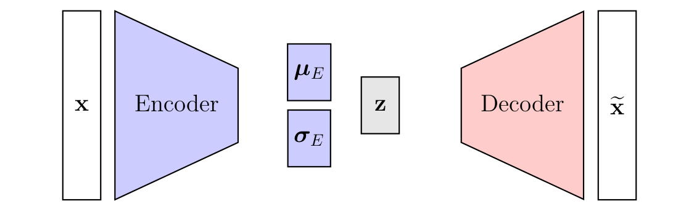

Eslami et al. (2016) introduce the Attend-Infer-Repeat (AIR) framework as an end-to-end trainable generative model capable of decomposing multi-object scenes into its constituent objects in an unsupervised learning setting. AIR builds upon the inductive bias that real-world scenes can be understood as a composition of (locally) self-contained objects. Therefore, AIR uses a structured probabilistic model whose parameters are obtained by inference/optimization. As the name suggests, the image decomposition process can be abstracted into three steps:
Attend: Firstly, the model uses a Spatial Transformer (ST) to focus on a specific region of the image, i.e., crop the image.
Infer: Secondly, the cropped image is encoded by a Variational Auto-Encoder (VAE). Note the same VAE is used for every cropped image.
Repeat: Lastly, these steps are repreated until the full image is described or the maximum number of repetitions is reached.
Notably, the model can handle a variable number of objects (upper-bounded) by treating inference as an iterative process. As a proof of concept, they show that AIR could successfully learn to decompose multi-object scenes in multiple datasets (multiple MNIST, Sprites, Omniglot, 3D scenes).
Paper Results. Taken from this presentation. Note that the aim of unsupervised representation learning is to obtain good representations rather than perfect reconstructions.
Model Description
AIR is a rather sophisticated framework with some non-trivial subtleties. For the sake of clarity, the following description is organized as follows: Firstly, a high-level overview of the main ideas is given. Secondly, the transition from these ideas into a mathematical formulation (ignoring difficulties) is described. Lastly, the main difficulties are highlighted and how Eslami et al. (2016) proposed to tackle them.
High-Level Overview
In essence, the model can be understood as a special VAE architecture in which an image \(\textbf{x}\) is encoded to some kind of latent distribution from which we sample the latent representation \(\textbf{z}\) which then can be decoded into an reconstructed image \(\widetilde{\textbf{x}}\), see image below. The main idea by Eslami et al. (2016) consists of imposing additional structure in the model using the inductive bias that real-world scenes can often be approximated as multi-object scenes, i.e., compositions of several (variable number) objects. Additionally, they assume that all of these objects live in the same domain, i.e., each object is an instantiation from the same class.

Standard VAE Architecture. AIR can be understood as a modified VAE architecture.
To this end, Eslami et al. (2016) replace the encoder with an recurrent, variable-length inference network to obtain a group-structured latent representation. Each group \(\textbf{z}^{(i)}\) should ideally correspond to one object where the entries can be understood as the compressed attributes of that object (e.g., type, appearance, pose). The main purpose of the inference network is to explain the whole scene by iteratively updating what remains to be explained, i.e., each step is conditioned on the image and on its knowledge of previously explained objects, see image below. Since they assume that each object lives in the same domain, the decoder is applied group-wise, i.e., each vector \(\textbf{z}^{(i)}\) is fed through the same decoder network, see image below.
VAE with Recurrent Inference Network. A group-structured latent representation is obtained by replacing the encoder with a recurrent, variable-length inference network. This network should ideally attend to one object at a time and is conditioned on the image \(\textbf{x}\) and its knowledge of previously epxlained objects \(\textbf{h}\), \(\textbf{z}\).
Eslami et al. (2016) put additional structure to the model by dividing the latent space of each object into what, where and pres. As the names suggest, \(\textbf{z}^{(i)}_{\text{what}}\) corresponds to the objects appearance, while \(\textbf{z}^{(i)}_{\text{where}}\) gives information about the position and scale. \(\text{z}_{\text{pres}}^{(i)}\) is a binary variable describing whether an object is present, it is rather a helper variable to allow for a variable number of objects to be detected (going to be explained in the Difficulties section).
To disentangle whatfrom where, the inference network extracts attentions crops \(\textbf{x}^{(i)}_{\text{att}}\) of the image \(\textbf{x}\) based on a three-dimensional vector \(\textbf{z}^{(i)}_{\text{where}} \left( \textbf{h}^{(i)} \right)\) which specifies the affine parameters \((s^{(i)}, t_x^{(i)}, t_y^{(i)})\) of the attention transformation1. These attention crops are then put through a standard VAE to encode the latent what-vector \(\textbf{z}^{(i)}_{\text{what}}\). Note that each attention crop is put through the same VAE, thereby consistency between compressed object attributes is achieved (i.e., each object is an instantiation of the same class).
On the decoder side, the reconstructed attention crop \(\widetilde{\textbf{x}}^{(i)}_{\text{att}}\) is transformed to \(\widetilde{\textbf{x}}^{(i)}\) using the information from \(\textbf{z}^{(i)}_{\text{where}}\). \(\widetilde{\textbf{x}}^{(i)}\) can be understood as a reconstructed image of the \(i\)-th object in the original image \(\textbf{x}\). Note that \(\text{z}^{(i)}_{\text{pres}}\) is used to decide whether the contribution of \(\widetilde{\textbf{x}}^{(i)}_{\text{att}}\) is added to the otherwise empty canvas \(\widetilde{\textbf{x}}^{(i)}\).
The schematic below summarizes the whole AIR architecture.
Schematic of AIR
Creation of Attention Crops and Inverse Transformation: As stated before, a Spatial Transformer (ST) module is used to produce the attention crops using a standard attention transformation. Remind that this means that the regular grid \(\textbf{G} = \{\begin{bmatrix} x_k^t & y_k^t \end{bmatrix}^{\text{T}} \}\) defined on the output is transformed into a new sampling grid \(\widetilde{\textbf{G}} = \{\begin{bmatrix} x_k^s & y_k^s \end{bmatrix}^{\text{T}} \}\) defined on the input. The latent vector \(\textbf{z}^{(i)}_{\text{where}}\) can be used to build the attention transformation matrix, i.e.,
This is nothing new, but how do we map the reconstructed attention crop \(\tilde{\textbf{x}}^{(i)}_{\text{att}}\) back to the original image space, i.e., how can we produce \(\widetilde{\textbf{x}}^{(i)}\) from \(\widetilde{\textbf{x}}^{(i)}_{\text{att}}\) and \(\textbf{z}^{(i)}_{\text{where}}\)? The answer is pretty simple, we use the (pseudo)inverse2 of the formerly defined attention transformation matrix, i.e.,
where \(\left(\textbf{A}^{(i)}\right)^{+}\) denotes the Moore-Penrose inverse of \(\textbf{A}^{(i)}\), and the regular grid \(\textbf{G} = \{\begin{bmatrix} x_k^t & y_k^t \end{bmatrix}^{\text{T}} \}\) is now defined on the original image space3. Below is a self-written interactive visualization where \(\widetilde{\textbf{x}}^{(i)}_{\text{att}} = \textbf{x}^{(i)}_{\text{att}}\). It shows nicely that the whole process can abstractly be understood as cutting of a crop from the original image and placing the reconstructed version with the inverse scaling and shifting on an otherwise empty (black) canvas. The code and visualization can be found here.
Interactive Transformation Visualization
Mathematical Model
While the former model description gave an overview about the inner workings and ideas of AIR, the following section introduces the probabilistic model over which AIR operates. Similar to the VAE paper by Kingma and Welling (2013), Eslami et al. (2016) introduce a modeling assumption for the generative process and use a variational approximation for the true posterior of that process to allow for joint optimization of the inference (encoder) and generator (decoder) parameters.
In contrast to standard VAEs, the modeling assumption for the generative process is more structured in AIR, see image below. It assumes that:
The number of objects \(n\) is sampled from some discrete prior distribution \(p_N\) (e.g., geometric distribution) with maximum value \(N\).
The latent scene descriptor \(\textbf{z} = \left(\textbf{z}^{(1)}, \textbf{z}^{(2)}, \dots, \textbf{z}^{(n)} \right)\) (length depends on sampled \(n\)) is sampled from a scene model \(\textbf{z} \sim p_{\boldsymbol{\theta}}^{z} \left( \cdot | n \right)\), where each vector \(\textbf{z}^{(i)}\) describes the attributes of one object in the scene. Furthermore, Eslami et al. (2016) assume that \(\textbf{z}^{(i)}\) are independent for each possible \(n\), i.e., \(p_{\boldsymbol{\theta}}^{z} \left( \textbf{z} | n \right) = \prod_{i=1}^n p_{\boldsymbol{\theta}}^z \left( \textbf{z}^{(i)}\right)\).
\(\textbf{x}\) is generated by sampling from the conditional distribution \(p_{\boldsymbol{\theta}}^{x} \left( \textbf{x} | \textbf{z} \right)\).
As a result, the marginal likelihood of an image given the generative model parameters can be stated as follows
Generative Model VAE vs AIR. Note that for a given dataset \(\textbf{X} = \{ \textbf{x}^{(i)}\}_{i=1}^{L}\) the marginal likelihood of the whole dataset can be computed via $p_{} ( ) = {i=1}^{L} p{} ( ^{(i)} ) $.
Learning by optimizing the ELBO: Since the integral is intractable for most models, Eslami et al. (2016) introduce an amortized4 variational approximation \(q_{\boldsymbol{\phi}} \left(\textbf{z}, n | \textbf{x}\right)\) for the true posterior \(p_{\boldsymbol{\theta}}\left(\textbf{z}, n |\textbf{x}\right)\). From here on, the steps are very similar to the VAE paper by Kingma and Welling (2013): The objective of minimizing the KL divergence between the parameterized variational approximation (using a neural network) and the true (but unknown) posterior \(p_{\boldsymbol{\theta}}\left(\textbf{z}, n |\textbf{x}\right)\) is approximated by maximizing the evidence lower bound (ELBO):
where \(p_{\boldsymbol{\theta}} \left( \textbf{x}^{(i)} | \textbf{z}, n \right)\) is a parameterized probabilistic decoder5 (using a neural network) and \(p_{\boldsymbol{\theta}} (\textbf{z}, n) = p_{\boldsymbol{\theta}} \left(\textbf{z} | n \right) p \left( n \right)\) is prior on the joint probability of \(\textbf{z}\) and \(n\) that we need to define a priori. As a result, the optimal parameters \(\boldsymbol{\theta}\), \(\boldsymbol{\phi}\) can be learnt jointly by optimizing (maximizing) the ELBO.
Difficulties
In the former explanation, it was assummed that we could easily define some parameterized probabilistic encoder \(q_{\boldsymbol{\phi}} \left( \textbf{z}, n | \textbf{x}^{(i)} \right)\) and decoder \(p_{\boldsymbol{\theta}} \left( \textbf{x}^{(i)} | \textbf{z}, n \right)\) using neural networks. However, there are some obstacles in our way:
How can we infer a variable number of objects \(n\)? Actually, we would need to evaluate \(p_N \left(n | \textbf{x}\right) = \int q_{\boldsymbol{\phi}} \left(\textbf{z}, n | \textbf{x} \right) d \textbf{z}\) for all \(n=1,\dots, N\) and then sample from the resulting distribution.
The number of objects \(n\) is clearly a discrete variable. How can we backprograte if we sample from a discrete distribution?
What priors should we choose? Especially, the prior for the number of objects in a scene \(n \sim p_N\) is unclear.
What the first or second object in a scene constitutes is somewhat arbitrary. As a result, object assigments \(\begin{bmatrix} \textbf{z}^{(1)} & \dots & \textbf{z}^{(n)} \end{bmatrix} =\textbf{z} \sim q_{\boldsymbol{\phi}} \left(\textbf{z} | \textbf{x}^{(i)}, n \right)\) should be exchangeable and the decoder \(p_{\boldsymbol{\theta}} \left( \textbf{x}^{(i)} | \textbf{z}, n \right)\) should be permutation invariant in terms of \(\textbf{z}^{(i)}\). Thus, the latent representation needs to preserve some strong symmetries.
Eslami et al. (2016) tackle these challenges by defining inference as an iterative process using a recurrent neural network (RNN) that is run for \(N\) steps (maximum number of objects). As a result, the number of objects \(n\) can be encoded in the latent distribution by defining the approximated posterior as follows
where \(z_{\text{pres}}^{(i)}\) is an introduced binary variable sampled from a Bernoulli distribution \(z_{\text{pres}}^{(i)} \sim \text{Bern} \left( p_{\text{pres}}^{(i)} \right)\) whose probability \(p_{\text{pres}}^{(i)}\) is predicted at each iteration step. Whenever \(z_{\text{pres}}^{(i)}=0\) the inference process stops and no more objects can be described, i.e., we enforce \(z_{\text{pres}}^{(i+1)}=0\) for all subsequent steps such that the vector \(\textbf{z}_{\text{pres}}\) looks as follows
Thus, \(z_{\text{pres}}^{(i)}\) may be understood as an interruption variable. Recurrence is required to avoid explaining the same object twice.
Backpropagation for Discrete Variables: While we can easily draw samples from a Bernoulli distribution \(z_{\text{pres}}^{(i)} \sim \text{Bern} \left( p_{\text{pres}}^{(i)} \right)\), backpropagation turns out to be problematic. Remind that for continuous variables such as Gaussian distributions parameterized by mean and variance (e.g., \(\textbf{z}^{(i)}_{\text{what}}\), \(\textbf{z}^{(i)}_{\text{where}}\)) there is the reparameterization trick to circumvent this problem. However, any reparameterization of discrete variables includes discontinuous operations through which we cannot backprograte. Thus, Eslami et al. (2016) use a variant of the score-function estimator as a gradient estimator. More precisely, the reconstruction accuracy gradient w.r.t. \(\textbf{z}_{\text{pres}}\) is approximated by the score-function estimator, i.e.,
Eslami et al. (2016) note that in this raw form the gradient estimate is likely to have high variance. To reduce variance, they use appropriately structured neural baselines citing a paper from Minh and Gregor, 2014. Without going into too much detail, appropriately structured neural baselines build upon the idea of variance reduction in score function estimators by introducing a scalar baseline \(\lambda\) as follows
Minh and Gregor, 2014 propose to use a data-dependent neural baseline \(\lambda_{\boldsymbol{\psi}} (\textbf{x})\) that is trained to match its target \(f_{\boldsymbol{\theta}}\). For further reading, pyro’s SVI part III is a good starting point.
Prior Distributions: Before we take a closer look on the prior distribution, it will be helpful to rewrite the regularization term
Note that we assume that each \(\textbf{z}_k^{(i)}\) is sampled independently from their respective distribution such that products could equally be rewritten as concatenated vectors. Clearly, there are three different prior distributions that we need to define in advance:
\(p_{\boldsymbol{\theta}} \left(\textbf{z}_{\text{what}}^{(i)} \right) \sim \mathcal{N} \left(\textbf{0}, \textbf{I} \right)\): A centerd isotropic Gaussian prior is a typical choice in standard VAEs and has proven to be effective6. Remind that the what-VAE should ideally receive patches of standard MNIST digits.
\(p_{\boldsymbol{\theta}} \left(\textbf{z}_{\text{where}}^{(i)}\right) \sim \mathcal{N} \left( \boldsymbol{\mu}_{\text{w}} , \boldsymbol{\sigma}_{\text{w}}^2 \textbf{I} \right)\): In this distribution, we can encode prior knowledge about the objects locality, i.e., average size and location of objects and their standard deviations.
\(p_{\boldsymbol{\theta}} \left(\textbf{z}_{\text{pres}}^{(i)}\right) \sim \text{Bern} (p_{\text{pres}})\): Eslami et al. (2016) used an annealing geometric distribution as a prior on the number of objects7, i.e., the success probability decreases from a value close to 1 to some small value close to 0 during the course of the training. The intuitive idea behind this process is to encourage the model to explore the use of objects (in the initial phase), and then to constrain the model to use as few objects as possible (trade-off between number of objects and reconstruction accuracy).
For simplicity, we use a fixed Bernoulli distribution for each step as suggested in the pyro tutorial with \(p_{\text{pres}} = 0.01\), i.e., we will constrain the number of objects from the beginning. To encourage the model to use objects we initialize the what-decoder to produce empty scenes such that things do not get much worse in terms of reconstruction accuracy when objects are used (also inspired by pyro).
Implementation
The following reimplementation aims to reproduce the results of the multi-MNIST experiment, see image below. We will make some adaptations inspired by this pyro tutorial and this pytorch reimplementation from Andrea Dittadi. As a result, the following reimplementation receives a huge speed up in terms of convergence time and can be trained in less than 10 minutes on a Nvidia Tesla K80 (compared to 2 days on a Nvidia Quadro K4000 GPU by Eslami et al. (2016)).
As noted by Eslami et al. (2016), their model successfully learned to count the number of digits and their location in each image (i.e., appropriate attention windows) without any supervision. Furthermore, the scanning policy of the inference network (i.e., object assignment policy) converges to spatially divided regions where the direction of the spatial border seems to be random (dependent on random initialization). Lastly, the model also learned that it never needs to assign a third object (all images in the training dataset contained a maximum of two digits).
Eslami et al. (2016) argue that the the structure of AIR puts an important inductive bias onto explaining multi-object scenes by using two adversaries: * AIR wants to explain the scene, i.e., the reconstruction error should be minimized. * AIR is penalized for each instantiated object due to the KL divergence. Furthermore, the what-VAE puts an additional prior of instantiating similar objects.
Multi-MNIST Dataset
The multi-MNIST datasets consists of \(50 \times 50\) gray-scale images containing zero, one or two non-overlapping random MNIST digits with equal probability, see image below. This dataset can easily be generated by taking a blank \(50 \times 50\) canvas and positioning a random number of digits (drawn uniformly from MNIST dataset) onto it. To ensure that MNIST digits (\(28\times28\)) will not overlap, we scale them to \(24\times 24\) and then position them such that the centers of two MNIST digits do not overlap. Note that some small overlap may occur which we simply accept. At the same time, we record the number of digits in each generated image to measure the count accuracy during training.
Multi-MNIST Dataset Examples.
Code
import torchimport numpy as npfrom torchvision import datasets, transformsfrom torch.utils.data import TensorDatasetCANVAS_SIZE =50# canvas in which 0/1/2 MNIST digits are putMNIST_SIZE =24# size of original MNIST digits (resized)def generate_dataset(num_images, SEED=1):"""generates multiple MNIST dataset with 0, 1 or 2 non-overlaping digits Args: num_images (int): number of images inside dataset Returns: multiple_MNIST (torch dataset) """ data = torch.zeros([num_images, 1, CANVAS_SIZE, CANVAS_SIZE]) original_MNIST = datasets.MNIST('./data', train=True, download=True, transform=transforms.Compose([ transforms.Resize(size=(MNIST_SIZE, MNIST_SIZE)), transforms.ToTensor()]))# sample random digits and positions np.random.seed(SEED) pos_positions = np.arange(int(MNIST_SIZE/2),CANVAS_SIZE -int(MNIST_SIZE/2)) mnist_indices = np.random.randint(len(original_MNIST), size=(num_images, 2)) num_digits = np.random.randint(3, size=(num_images)) positions_0 = np.random.choice(pos_positions, size=(num_images, 2), replace=True)for i_data inrange(num_images):if num_digits[i_data] >0:# add random digit at random position random_digit = original_MNIST[mnist_indices[i_data][0]][0] x_0, y_0 = positions_0[i_data][0], positions_0[i_data][1] x = [x_0-int(MNIST_SIZE/2), x_0+int(MNIST_SIZE/2)] y = [y_0-int(MNIST_SIZE/2), y_0+int(MNIST_SIZE/2)] data[i_data,:,y[0]:y[1],x[0]:x[1]] += random_digitif num_digits[i_data] ==2:# add second non overlaping random digit random_digit = original_MNIST[mnist_indices[i_data][1]][0] impos_x_pos = np.arange(x_0-int(MNIST_SIZE/2), x_0+int(MNIST_SIZE/2)) impos_y_pos = np.arange(y_0-int(MNIST_SIZE/2), y_0+int(MNIST_SIZE/2)) x_1 = np.random.choice(np.setdiff1d(pos_positions, impos_x_pos), size=1)[0] y_1 = np.random.choice(np.setdiff1d(pos_positions, impos_y_pos), size=1)[0] x = [x_1-int(MNIST_SIZE/2), x_1+int(MNIST_SIZE/2)] y = [y_1-int(MNIST_SIZE/2), y_1+int(MNIST_SIZE/2)] data[i_data,:,y[0]:y[1],x[0]:x[1]] += random_digit labels = torch.from_numpy(num_digits)return TensorDataset(data.type(torch.float32), labels)
Model Implementation
For the sake of clarity, the model implementation is divided into its constitutive parts:
what-VAE implementation: The what-VAE can be implemented as an independent class that receives an image patch (crop) and outputs its reconstruction as well as its latent distribution parameters. Note that we could also compute the KL divergence and reconstruction error within that class, however we will put the whole loss computation in another function to have everything in one place. As shown in a previous summary, two fully connected layers with ReLU non-linearity in between suffice for decent reconstructions of MNIST digits.
We have additional prior knowledge about the output distribution: It should only be between 0 and 1. It is always useful to put as much prior knowledge as possible into the architecture, but how to achieve this?
Clamping: The most intuitive idea would be to simply clamp the network outputs, however this is a bad idea as gradients wont propagate if the outputs are outside of the clamped region.
Network Initialization: Another approach would be to simply initialize the weights and biases of the output layer to zero such that further updates push the outputs into the positive direction. However, as the reconstruction of the whole image in AIR is a sum over multiple reconstructions, this turns out to be a bad idea as well. I tried it and the what-VAE produces negative outputs which it compensates with another object that has outputs greater than 1.
Sigmoid Layer: This is a typical choice in classification problems and is commonly used in VAEs when the decoder approximates a Bernoulli distribution. However, it should be noted that using MSE loss (Gaussian decoder distribution) with a sigmoid is generally not advised due to the vanishing/saturating gradients (explained here).
On the other hand, using a Bernoulli distribution for the reconstruction of the whole image (sum over multiple reconstruction) comes with additional problems, e.g., numerical instabilities due to empty canvas (binary cross entropy can not be computed when probabilties are exactly 0) and due to clamping (as the sum over multiple bernoulli means could easily overshoot 1). While there might be some workarounds, I decided to go an easier path.
Output Distribution\(\mathbb{R}_{+}\): This is motivated by the observations I made during the network initialization approach. By impeding the network to produce negative outputs, we indirectly force outputs between \(0\) and \(1\). Thereby, we do not need to get our hands dirty with a Bernoulli distribution or vanishing gradient problems. Furthermore, we use Pytorch’s default initialization8 to produce mostly empty objects. This encourages the model to try out objects in the beginning of the training.
Code
from torch import nnWINDOW_SIZE = MNIST_SIZE # patch size (in one dimension) of what-VAEZ_WHAT_HIDDEN_DIM =400# hidden dimension of what-VAEZ_WHAT_DIM =20# latent dimension of what-VAEFIXED_VAR =0.5**2# fixed variance of Gaussian decoderclass VAE(nn.Module):"""simple VAE class with a Gaussian encoder (mean and diagonal variance structure) and a Gaussian decoder with fixed variance Attributes: encoder (nn.Sequential): encoder network for mean and log_var decoder (nn.Sequential): decoder network for mean (fixed var) """def__init__(self):super(VAE, self).__init__()self.encoder = nn.Sequential( nn.Linear(WINDOW_SIZE**2, Z_WHAT_HIDDEN_DIM), nn.ReLU(), nn.Linear(Z_WHAT_HIDDEN_DIM, Z_WHAT_DIM*2), )self.decoder = nn.Sequential( nn.Linear(Z_WHAT_DIM, Z_WHAT_HIDDEN_DIM), nn.ReLU(), nn.Linear(Z_WHAT_HIDDEN_DIM, WINDOW_SIZE**2), )returndef forward(self, x_att_i): z_what_i, mu_E_i, log_var_E_i =self.encode(x_att_i) x_tilde_att_i =self.decode(z_what_i)return x_tilde_att_i, z_what_i, mu_E_i, log_var_E_idef encode(self, x_att_i): batch_size = x_att_i.shape[0]# get encoder distribution parameters out_encoder =self.encoder(x_att_i.view(batch_size, -1)) mu_E_i, log_var_E_i = torch.chunk(out_encoder, 2, dim=1)# sample noise variable for each batch epsilon = torch.randn_like(log_var_E_i)# get latent variable by reparametrization trick z_what_i = mu_E_i + torch.exp(0.5*log_var_E_i) * epsilonreturn z_what_i, mu_E_i, log_var_E_idef decode(self, z_what_i):# get decoder distribution parameters x_tilde_att_i =self.decoder(z_what_i)# force output to be positive x_tilde_att_i = x_tilde_att_i.abs()# reshape to [1, WINDOW_SIZE, WINDOW_SIZE] (input shape) x_tilde_att_i = x_tilde_att_i.view(-1, 1, WINDOW_SIZE, WINDOW_SIZE)return x_tilde_att_i
Recurrent Inference Network: Eslami et al. (2016) used a standard recurrent neural network (RNN) which in each step \(i\) computes
i.e., the distribution parameters of \(\text{z}_{\text{pres}}^{(i)}\sim \text{Bern}\left( p^{(i)}_{\text{pres}} \right)\) and \(\textbf{z}_{\text{where}}^{(i)} \sim \mathcal{N} \left( \boldsymbol{\mu}_{\text{where}}, \boldsymbol{\sigma}^2_{\text{where}}\textbf{I}\right)\), and the next hidden state \(\textbf{h}^{(i)}\). They did not provide any specifics about the network architecture, however in my experiments it turned out that a simple 3 layer (fully-connected) network suffices for this task.
To speed up convergence, we initialize useful distribution parameters:
\(p_{\text{pres}}^{(i)}\approx 0.8\): This encourages AIR to use objects in the beginning of training.
\(\boldsymbol{\mu}_{\text{where}} = \begin{bmatrix} -3 & 0 & 0\end{bmatrix}^{\text{T}}\): This leads to a center crop with (approximate) size of the inserted digits.
AIR Implementation: The whole AIR model is obtained by putting everything together. To better understand what’s happening, let’s take a closer look on the two main functions:
forward(x): This function essentially does what is described in High-Level Overview. Its purpose is to obtain a structured latent representation \(\textbf{z}=\bigg\{ \left[ \textbf{z}_{\text{pres}}^{(i)}, \textbf{z}_{\text{where}}^{(i)}, \textbf{z}_{\text{what}}^{(i)}\right]_{i=1}^N \bigg\}\) for a given input (batch of images) \(\textbf{x}\) and to collect everything needed to compute the loss.
compute_loss(x): This function is only necessary for training. It computes four loss quantities:
KL Divergence: As noted above the KL divergence term can be computed by summing the KL divergences of each type (pres, what, where) for each step.
NLL: We assume a Gaussian decoder such that the negative log-likelihood can be computed as follows
where \(i\) enumerates the pixel space, \(\textbf{x}\) denotes the original image, \(\widetilde{\textbf{x}}\) the reconstructed image and \(\sigma^2\) is a the fixed variance of the Gaussian distribution (hyperparameter).
REINFORCE Term: Since the image reconstruction is build by sampling from a discrete distribution, backpropagation stops at the sampling operation. In order to optimize the distribution parameters \(p_{\text{pres}}^{(i)}\), we use a score-function estimator with a data-dependent neural baseline.
Baseline Loss: This loss is needed to approximately fit the neural baseline to the true NLL in order to reduce the variance of the REINFORCE estimator.
Code
import torch.nn.functional as Ffrom torch.distributions import BernoulliN =3# number of inference stepsEPS =1e-32# numerical stabilityPRIOR_MEAN_WHERE = [3., 0., 0.] # prior for mean of z_i_wherePRIOR_VAR_WHERE = [0.1**2, 1., 1.] # prior for variance of z_i_wherePRIOR_P_PRES = [0.01] # prior for p_i_pres of z_i_presBETA =0.5# hyperparameter to scale KL divOMEGA_DIM = Z_PRES_DIM +2*Z_WHERE_DIM +2*Z_WHAT_DIMclass AIR(nn.Module): PRIOR_MEAN_Z_WHERE = nn.Parameter(torch.tensor(PRIOR_MEAN_WHERE), requires_grad=False) PRIOR_VAR_Z_WHERE = nn.Parameter(torch.tensor(PRIOR_VAR_WHERE), requires_grad=False) PRIOR_P_Z_PRES = nn.Parameter(torch.tensor(PRIOR_P_PRES), requires_grad=False) expansion_indices = torch.LongTensor([1, 0, 2, 0, 1, 3]) target_rectangle = torch.tensor( [[-1., -1., 1., 1., -1.], [-1., 1., 1., -1, -1.], [1., 1., 1., 1., 1.]] ).view(1, 3, 5)def__init__(self):super(AIR, self).__init__()self.vae = VAE()self.rnn = RNN()self.baseline = RNN(True)returndef compute_loss(self, x):"""compute the loss of AIR (essentially a VAE loss) assuming the following prior distributions for the latent variables z_where ~ N(PRIOR_MEAN_WHERE, PRIOR_VAR_WHERE) z_what ~ N([0, 1]) z_pres ~ Bern(p_pres) and a Gaussian decoder with fixed diagonal var (FIXED_VAR) """ batch_size = x.shape[0] results =self.forward(x, True)# kl_div for z_pres (between two Bernoulli distributions) q_z_pres = results['all_prob_pres'] P_Z_PRES = AIR.PRIOR_P_Z_PRES.expand(q_z_pres.shape).to(x.device) kl_div_pres = AIR.bernoulli_kl(q_z_pres, P_Z_PRES).sum(axis=2)# kl_div for z_what (standard VAE regularization term) q_z_what = [results['all_mu_what'], results['all_log_var_what']] P_MU_WHAT = torch.zeros_like(results['all_mu_what']) P_VAR_WHAT = torch.ones_like(results['all_log_var_what']) P_Z_WHAT = [P_MU_WHAT, P_VAR_WHAT] kl_div_what = AIR.gaussian_kl(q_z_what, P_Z_WHAT).sum(axis=2)# kl_div for z_where (between two Gaussian distributions) q_z_where = [results['all_mu_where'], results['all_log_var_where']] P_MU_WHERE=AIR.PRIOR_MEAN_Z_WHERE.expand(results['all_mu_where'].shape) P_VAR_WHERE=AIR.PRIOR_VAR_Z_WHERE.expand(results['all_mu_where'].shape) P_Z_WHERE = [P_MU_WHERE.to(x.device), P_VAR_WHERE.to(x.device)] kl_div_where = AIR.gaussian_kl(q_z_where, P_Z_WHERE).sum(axis=2)# sum all kl_divs and use delayed mask to zero out irrelevants delayed_mask = results['mask_delay'] kl_div = (kl_div_pres + kl_div_where + kl_div_what) * delayed_mask# negative log-likelihood for Gaussian decoder (no gradient for z_pres) factor =0.5* (1/FIXED_VAR) nll = factor * ((x - results['x_tilde'])**2).sum(axis=(1,2,3))# REINFORCE estimator for nll (gradient for z_pres) baseline_target = nll.unsqueeze(1) reinforce_term = ((baseline_target - results['baseline_values'] ).detach()*results['z_pres_likelihood']*delayed_mask).sum(1)# baseline model loss baseline_loss = ((results['baseline_values'] - baseline_target.detach())**2* delayed_mask).sum(1) loss =dict() loss['kl_div'] = BETA*kl_div.sum(1).mean() loss['nll'] = nll.mean() loss['reinforce'] = reinforce_term.mean() loss['baseline'] = baseline_loss.mean()return loss, resultsdef forward(self, x, save_attention_rectangle=False): batch_size = x.shape[0]# initializations all_z = torch.empty((batch_size, N, Z_DIM), device=x.device) z_pres_likelihood = torch.empty((batch_size, N), device=x.device) mask_delay = torch.empty((batch_size, N), device=x.device) all_omega = torch.empty((batch_size, N, OMEGA_DIM), device=x.device) all_x_tilde = torch.empty((batch_size, N, CANVAS_SIZE, CANVAS_SIZE), device=x.device) baseline_values = torch.empty((batch_size, N), device=x.device) z_im1 = torch.ones((batch_size, Z_DIM)).to(x.device) h_im1 = torch.zeros((batch_size, RNN_HIDDEN_STATE_DIM)).to(x.device) h_im1_b = torch.zeros((batch_size, RNN_HIDDEN_STATE_DIM)).to(x.device)if save_attention_rectangle: attention_rects = torch.empty((batch_size, N, 2, 5)).to(x.device)for i inrange(N): z_im1_pres = z_im1[:, 0:1]# mask_delay is used to zero out all steps AFTER FIRST z_pres = 0 mask_delay[:, i] = z_im1_pres.squeeze(1)# obtain parameters of sampling distribution and hidden state omega_i, h_i =self.rnn(x, z_im1, h_im1)# baseline version baseline_i, h_i_b =self.baseline(x.detach(), z_im1.detach(), h_im1_b)# set baseline 0 if z_im1_pres = 0 baseline_value = (baseline_i * z_im1_pres).squeeze()# extract sample distributions parameters from omega_i prob_pres_i = omega_i[:, 0:1] mu_where_i = omega_i[:, 1:4] log_var_where_i = omega_i[:, 4:7]# sample from distributions to obtain z_i_pres and z_i_where z_i_pres_post = Bernoulli(probs=prob_pres_i) z_i_pres = z_i_pres_post.sample() * z_im1_pres# likelihood of sampled z_i_pres (only if z_im_pres = 1) z_pres_likelihood[:, i] = (z_i_pres_post.log_prob(z_i_pres) * z_im1_pres).squeeze(1)# get z_i_where by reparametrization trick epsilon_w = torch.randn_like(log_var_where_i) z_i_where = mu_where_i + torch.exp(0.5*log_var_where_i)*epsilon_w# use z_where and x to obtain x_att_i x_att_i = AIR.image_to_window(x, z_i_where)# put x_att_i through VAE x_tilde_att_i, z_i_what, mu_what_i, log_var_what_i =\self.vae(x_att_i)# create image reconstruction x_tilde_i = AIR.window_to_image(x_tilde_att_i, z_i_where)# update im1 with current versions z_im1 = torch.cat((z_i_pres, z_i_where, z_i_what), 1) h_im1 = h_i h_im1_b = h_i_b# put all distribution parameters into omega_i omega_i = torch.cat((prob_pres_i, mu_where_i, log_var_where_i, mu_what_i, log_var_what_i), 1)# store intermediate results all_z[:, i:i+1] = z_im1.unsqueeze(1) all_omega[:, i:i+1] = omega_i.unsqueeze(1) all_x_tilde[:, i:i+1] = x_tilde_i baseline_values[:, i] = baseline_value# for nice visualizationif save_attention_rectangle: attention_rects[:, i] = (AIR.get_attention_rectangle(z_i_where)*z_i_pres.unsqueeze(1))# save results in dict (easy accessibility) results =dict()# fixes Z_PRES_DIM = 1 and Z_WHERE_DIM = 3 results['z_pres_likelihood'] = z_pres_likelihood results['all_z_pres'] = all_z[:, :, 0:1] results['mask_delay'] = mask_delay results['all_prob_pres'] = all_omega[:, :, 0:1] results['all_z_where'] = all_z[:, :, 1:4] results['all_mu_where'] = all_omega[:, :, 1:4] results['all_log_var_where'] = all_omega[:, :, 4:7] results['all_z_what'] = all_z[:, :, 4::] results['all_mu_what'] = all_omega[:, :, 7:7+Z_WHAT_DIM] results['all_log_var_what'] = all_omega[:, :, 7+Z_WHAT_DIM::] results['baseline_values'] = baseline_valuesif save_attention_rectangle: results['attention_rects'] = attention_rects# compute reconstructed image (take only x_tilde_i with z_i_pres=1) results['x_tilde_i'] = all_x_tilde x_tilde = (all_z[:, :, 0:1].unsqueeze(2) * all_x_tilde).sum(axis=1, keepdim=True) results['x_tilde'] = x_tilde# compute counts as identified objects (sum z_i_pres) results['counts'] = results['all_z_pres'].sum(1).to(dtype=torch.long)return results@staticmethoddef image_to_window(x, z_i_where): grid_shape = (z_i_where.shape[0], 1, WINDOW_SIZE, WINDOW_SIZE) z_i_where_inv = AIR.invert_z_where(z_i_where) x_att_i = AIR.spatial_transform(x, z_i_where_inv, grid_shape)return x_att_i@staticmethoddef window_to_image(x_tilde_att_i, z_i_where): grid_shape = (z_i_where.shape[0], 1, CANVAS_SIZE, CANVAS_SIZE) x_tilde_i = AIR.spatial_transform(x_tilde_att_i, z_i_where, grid_shape)return x_tilde_i@staticmethoddef spatial_transform(x, z_where, grid_shape): theta_matrix = AIR.z_where_to_transformation_matrix(z_where) grid = F.affine_grid(theta_matrix, grid_shape, align_corners=False) out = F.grid_sample(x, grid, align_corners=False)return out@staticmethoddef z_where_to_transformation_matrix(z_i_where):"""taken from https://github.com/pyro-ppl/pyro/blob/dev/examples/air/air.py """ batch_size = z_i_where.shape[0] out = torch.cat((z_i_where.new_zeros(batch_size, 1), z_i_where), 1) ix = AIR.expansion_indicesif z_i_where.is_cuda: ix = ix.cuda() out = torch.index_select(out, 1, ix) theta_matrix = out.view(batch_size, 2, 3)return theta_matrix@staticmethoddef invert_z_where(z_where): z_where_inv = torch.zeros_like(z_where) scale = z_where[:, 0:1] +1e-9 z_where_inv[:, 1:3] =-z_where[:, 1:3] / scale z_where_inv[:, 0:1] =1/ scalereturn z_where_inv@staticmethoddef get_attention_rectangle(z_i_where): batch_size = z_i_where.shape[0] z_i_where_inv = AIR.invert_z_where(z_i_where) theta_matrix = AIR.z_where_to_transformation_matrix(z_i_where_inv) target_rectangle = AIR.target_rectangle.expand(batch_size, 3,5).to(z_i_where.device) source_rectangle_normalized = torch.matmul(theta_matrix, target_rectangle)# remap into absolute values source_rectangle =0+ (CANVAS_SIZE/2)*(source_rectangle_normalized +1)return source_rectangle@staticmethoddef bernoulli_kl(q_probs, p_probs):# https://github.com/pytorch/pytorch/issues/15288 p1 = p_probs p0 =1- p1 q1 = q_probs q0 =1- q1 logq1 = (q1 + EPS).log() logq0 = (q0 + EPS).log() logp1 = (p1).log() logp0 = (p0).log() kl_div_1 = q1*(logq1 - logp1) kl_div_0 = q0*(logq0 - logp0)return kl_div_1 + kl_div_0@staticmethoddef gaussian_kl(q, p):# https://pytorch.org/docs/stable/_modules/torch/distributions/kl.html mean_q, log_var_q = q[0], q[1] mean_p, var_p = p[0], p[1] var_ratio = log_var_q.exp()/var_p t1 = (mean_q - mean_p).pow(2)/var_preturn-0.5* (1+ var_ratio.log() - var_ratio - t1)
Training Procedure: Lastly, a standard training procedure is implemented. We will use two optimizers, one for the model parameters and one for the neural baseline parameters. Note that the training process is completely unsupervised, i.e., the model only receives a batch of images to compute the losses.
Very neat results, indeed! Note that this looks very similar to Figure 3 in the AIR paper. The accuracy on the left denotes the count accuracy of the test dataset.
Closing Notes
Alright, time to step down from our high horse. Actually, it took me quite some time to tweak the hyperparameters to obtain such good results. I put a lot of prior knowledge into the model so that completely unsupervised is probably exaggerated. Using a slightly different setup might lead to entirely different results. Furthermore, even in this setup, there may be cases in which the training converges to some local maximum (depending on the random network initializations and random training dataset).
This transformation is more constrained with only 3-DoF. Therefore it only allows cropping, translation and isotropic scaling to be applied to the input feature map.